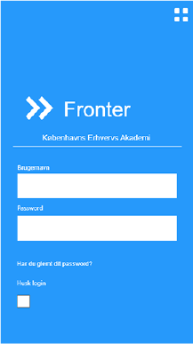
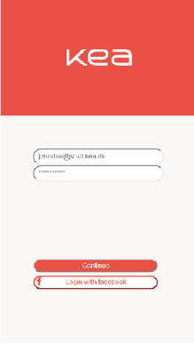
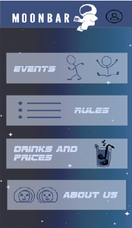

Vi fik stillet til opgave at skulle designe en forbedret app til KEA. Som en del af dette blev vi vist hvordan man laver Design Sprint, som en måde at fremstille et nyt produkt. En del af opgaven bestod af at designe vores egen web prototype i Adobe XD. Til sidst skulle vi designe en udvalgt version i html og CSS med grid.
Vi blev sat i gruppe, hvor vi skulle designe en app til KEA. Min gruppe besluttede sig for at lave en app dedikeret til Moonbar, som også var en del af den app der var blevet stillet i den indivuduelle opgave. Vi brugte Design Sprint til at fuldføre opgaven.
Design Sprint prototype (eksempel via Youtube)
Web prototype (kodeord: kea)
 GithubNative App
 Design dokumentationOversættelse af skrift:
Skitserne lavet til Crazy Eight. Inspireret af Espresso Husets app, lavede jeg forskellige versioner.
Appen er baseret på et system hvor man kan betale direkte med sit kort efter at have fået skannet en QR kode, eller man kan betale ved at have sat penge ind på en "konto" (lidt ligesom et rejsekort.)
Skitse til Art Museum der blev brugt til afstemning og kritik.
Delen der blev udvalgt var Instagram/Social medie delen.
{kind=link}
{kind=link}